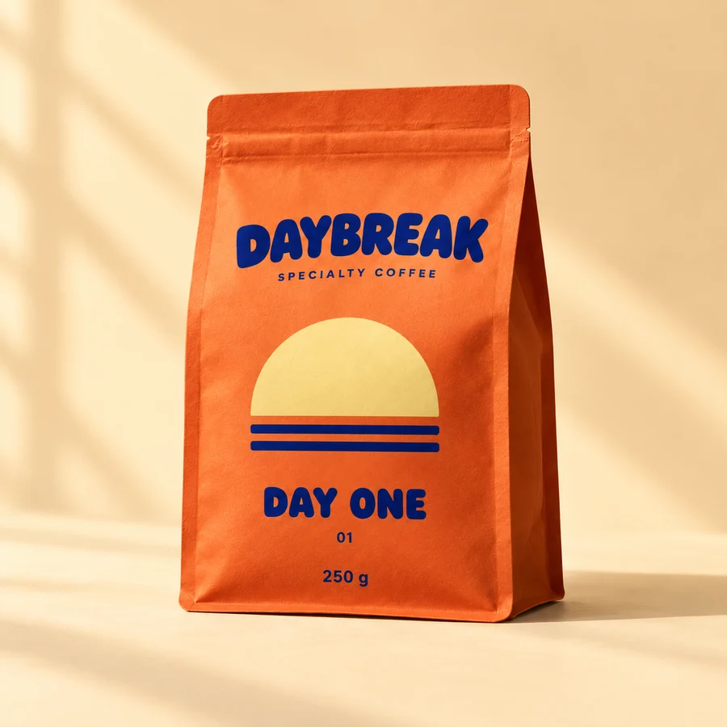

Choose a roast.
Three full product photographs, short descriptions and repeated label numbers support comparison.
IDENTITY · PACKAGING · STOREFRONT
An everyday choice.
A brighter beginning.
A fictional specialty coffee roastery that makes the morning choice feel approachable. One graphic idea moves from a family of coffee bags to a focused, working storefront.
Explore the storefrontBrowser prototype · Local demo bag · No real orders

01 / THE DESIGN PROBLEM
The fictional brief centers on a home brewer who wants a good daily coffee without mastering a specialist vocabulary. The task is simple: choose a roast personality, choose a preparation, and understand the price.
I gave the three products everyday names and a clear roast hierarchy. Flavor notes add character; roast words and large names do the practical work. No origin story or producer relationship is invented to make the brand look established.
Audience and shopping task are design hypotheses, not findings from customer research.
Original editable artwork. Same grid, three personalities.
02 / THE REUSABLE SYSTEM
The semicircle and two horizon bars make a mark simple enough to travel from a pouch to a cup, sticker or digital label. Each pack repeats the same order: brand, symbol, roast, number, weight.
Orange leads the family. Butter opens up the light roast; blue anchors the dark roast. Names and numbers repeat the distinction, so the system remains understandable without color.
The photographs use this graphic brief. The SVG label masters remain editable; AI-generated type and small construction details may vary from these precise masters. This is an art-direction exploration, not a production-ready dieline.



03 / VOICE IN THE DETAILS
Fredoka gives the headlines a rounded, generous voice without making the practical text playful. Epilogue keeps preparation choices and quantities readable. The type pairing separates brand expression from the shopping task.
I rejected a beige craft-coffee treatment with fine serif captions: it made the choice feel precious. I also rejected a neon, constantly moving cafe identity: it competed with the product names and controls.
Both families are self-hosted under the SIL Open Font License. The original sunrise mark is code-native SVG.
DAY ONE / Whole bean / 250 g
Rounded voice. Clear everyday details.
04 / FROM SHELF TO SCREEN
The storefront puts all three roast personalities together. Each product exposes roast, tasting notes, pack size, price and preparation before the add action. Different grinds remain different lines in the demo bag.
Try the shopping flowThree full product photographs, short descriptions and repeated label numbers support comparison.
A labeled native select asks for whole bean or grind. A missing selection blocks the add action.
Review exact roast and grind combinations, update quantities, remove an item, or empty the bag.
The working HTML prototype uses browser-local storage. It has no checkout, real inventory or Shopify connection.
05 / PROCESS & INTERACTION
I established the brief and label grid before generating the campaign still life. The selected campaign image then served as the reference for three catalog shots, keeping pouch shape, material and graphics consistent.
The hero stays still. There is no intro to wait through. A brief, user-triggered opacity change confirms label exploration here; reduced motion shows the new label immediately. Shopping targets stay in place.
The bag uses a native dialog with a contained focus order, Escape dismissal, restored focus and announcements inside the open dialog. Storage failure is visible, and the bag remains usable for the current visit.
06 / CANDID BOUNDARIES
Design, imagery and implementation were developed with AI assistance. No commissioned client, manufactured packaging, customer testimony or commercial outcome is represented.
A reusable packaging identity, deliberate art direction, responsive storefront and recoverable local shopping interactions.
Namespaced Liquid source is supplied separately. It has not been uploaded to a store.
Back to selected work